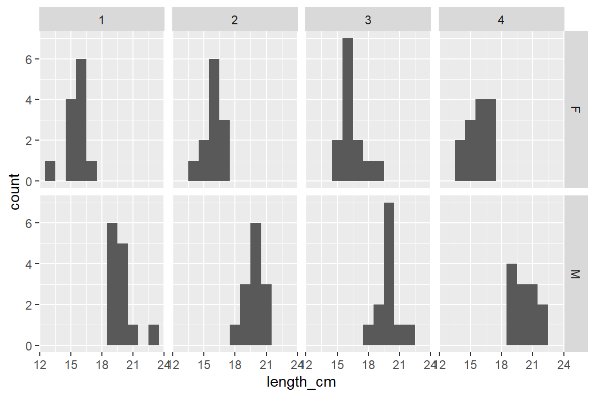
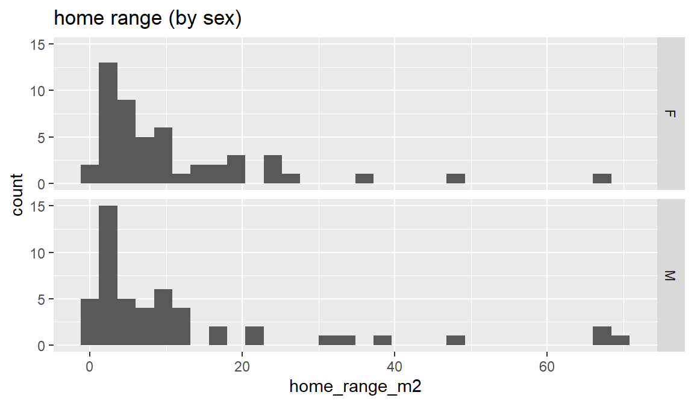
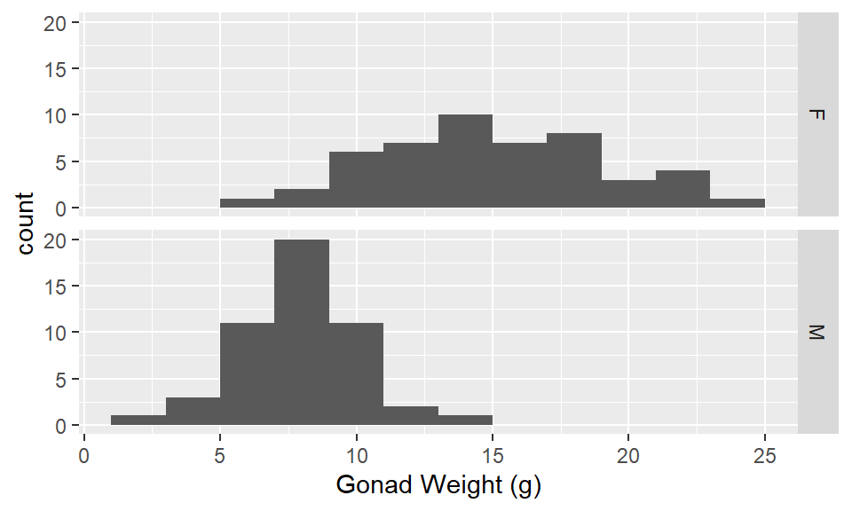
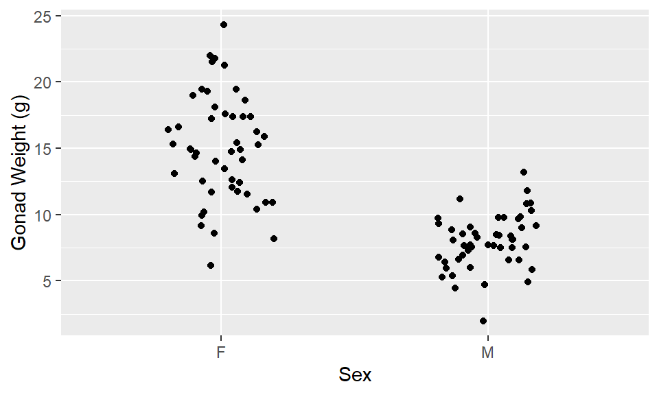
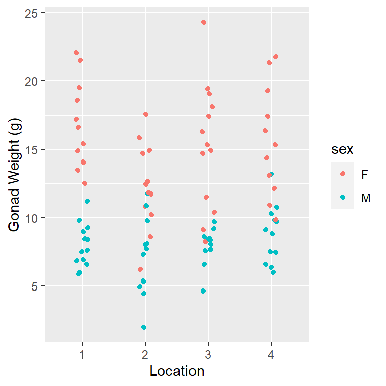

- 1
- load the tidyverse package (which includes ggplot2 and dplyr)
- 2
- load the skimr package (which includes the skim() function for descriptive statistics)
BIO 5100 - Visualize Distributions & Descriptive Statistics
Getting Started
Load Packages
You only need to “install” packages (download them to your computer) once.
If you have not already installed the tidyverse package to the computer you are using you can do so by: RStudio > Tools > Install Packages (type in package name)
But you have to “load” packages during each R session in order to use the functions within them
The tidyverse package is actually a collection of multiple R packages https://www.tidyverse.org/packages/ including the ggplot2 package (for plotting) and dplyr package (for organizing and summarizing data). And you can load these (and others packages in the tidyverse) all at once using library(tidyverse). You could alternatively load them separately library(ggplot2) and then library(dplyr) and so on.
The ggplot2 Package we will use primarily for making plots (and is part of the tidyverse) has great help pages: https://ggplot2.tidyverse.org/reference/index.html
The dplyr Package we will use for “data wrangling” (e.g., organizing, summarizing) and it also has (not as extensive) help pages https://dplyr.tidyverse.org/ (plus cheat sheets RStudio > Help > Cheatsheets)
Read-in the data file
A file named ‘YellowTangData_29_SEP_2016.csv’ is saved in the same folder (directory) as my .qmd file.
1dat_yt <- read_csv("YellowTangData_29_SEP_2016.csv")- 1
-
Use the
read_csv()function to read the .csv data table file, and assign that to an R object nameddat_yt
- The
read_csv()function is from the readr package in the tidyverse - After running the code chunk above, the dat_yt object you created should show up in the RStudio Environment window (top right)
View the data table
1glimpse(dat_yt)- 1
-
use glimpse
()function to examine the structure of the tibble named dat_yt
Rows: 100
Columns: 8
$ sex <chr> "M", "F", "F", "F", "F", "M", "F", "F", "M", "M", "M", "…
$ length_cm <dbl> 20.3, 16.0, 17.2, 17.1, 15.9, 20.5, 17.7, 15.1, 21.1, 19…
$ gonad_wt_g <dbl> 6.6, 22.0, 6.2, 17.4, 17.6, NA, 9.1, 15.4, 8.8, 7.6, 9.0…
$ home_range_m2 <dbl> 3.6, 24.5, 3.4, 19.8, 15.7, 5.1, 7.8, 2.1, 3.5, 1.7, 2.2…
$ gut_wt_g <dbl> 2.6, 0.6, 2.1, 0.7, 0.4, 0.7, 1.6, 2.7, 0.4, 2.2, 0.8, 0…
$ parasites <dbl> 8, 8, 7, 8, 8, 8, 8, 6, 8, 7, 6, 7, 6, 7, 6, 7, 7, 8, 7,…
$ location <dbl> 3, 1, 2, 4, 2, 2, 3, 1, 4, 1, 1, 2, 3, 4, 1, 3, 4, 2, 3,…
$ fishing_level <chr> "low", "high", "medium", "prohibited", "medium", "medium…The glimpse output shows you:
the number of Rows and Columns in the data frame
the name of each column (variable)
the data type of each variable: https://tibble.tidyverse.org/articles/types.html (typically you’ll see: chr - character, dbl - double (number), or fct - factor (categorical variable)
Always check to make sure data is what you expected it to be
Also, try double clicking on dat_yt in the environment window (upper right) to open the data viewer
Change the class of ‘location’ to factor
- R read-in ‘location’ as dbl (i.e., numerical variable) by default since locations are numbered 1, 2, 3, 4
1dat_yt <- dat_yt |>
2 mutate(location = as_factor(location))
# check if class for location now is factor
3glimpse(dat_yt)- 1
- Assign the results back to the ‘dat_yt’ object to store the changes
- 2
-
Use
as_factor()to convert the location variable to a factor, andmutate()overwrites the location variable in dat_yt with the new factor version - 3
-
You can see in the
glimpse()output that the variable location is now class fct (factor).
Rows: 100
Columns: 8
$ sex <chr> "M", "F", "F", "F", "F", "M", "F", "F", "M", "M", "M", "…
$ length_cm <dbl> 20.3, 16.0, 17.2, 17.1, 15.9, 20.5, 17.7, 15.1, 21.1, 19…
$ gonad_wt_g <dbl> 6.6, 22.0, 6.2, 17.4, 17.6, NA, 9.1, 15.4, 8.8, 7.6, 9.0…
$ home_range_m2 <dbl> 3.6, 24.5, 3.4, 19.8, 15.7, 5.1, 7.8, 2.1, 3.5, 1.7, 2.2…
$ gut_wt_g <dbl> 2.6, 0.6, 2.1, 0.7, 0.4, 0.7, 1.6, 2.7, 0.4, 2.2, 0.8, 0…
$ parasites <dbl> 8, 8, 7, 8, 8, 8, 8, 6, 8, 7, 6, 7, 6, 7, 6, 7, 7, 8, 7,…
$ location <fct> 3, 1, 2, 4, 2, 2, 3, 1, 4, 1, 1, 2, 3, 4, 1, 3, 4, 2, 3,…
$ fishing_level <chr> "low", "high", "medium", "prohibited", "medium", "medium…Descriptive statistics summarize() function
Calculate mean & median length of all fish
‘summarize()’ is from dplyr package (part of tidyverse)
1dat_yt |>
2 summarize(mean_length_cm = mean(length_cm),
3 median_length_cm = median(length_cm))
# Note: ctrl+shift+m or cmd+shift+m (Mac) will insert the pipe operator: |>- 1
-
Pass dat_yt using the
|>pipe operator to thesummarize()function - 2
-
using the
mean()andmedian()functions of the length_cm variable - 3
- and name those columns mean_length_cm and median_length_cm where those descriptive statistic values will be stored
# A tibble: 1 × 2
mean_length_cm median_length_cm
<dbl> <dbl>
1 18.0 18.2Add group_by() to calculate by sex
- Calculate min, mean, median, and max number of parasites for each category in the sex variable
1dat_yt |>
2 group_by(sex) |>
3 summarize(min_parasites = min(parasites),
4 mean_parasites = mean(parasites),
median_parasites = median(parasites),
max_parasites = max(parasites))- 1
-
Pass the dat_yt data.frame using the
|>pipe operator - 2
-
to the
group_by()function and group (subset) the data by sex, then pass that - 3
-
to the
summarize()function to make calculations on each group of data - 4
-
using the
min(),mean(),median(),andmax()functions of the parasites variable and name those columns where those descriptive statistic values will be stored accordingly
# A tibble: 2 × 5
sex min_parasites mean_parasites median_parasites max_parasites
<chr> <dbl> <dbl> <dbl> <dbl>
1 F 1 6.38 7 8
2 M 0 5.9 7 8Histograms
A histogram shows the distribution of a single numeric variable
- We will use functions from the ggplot2 package (part of the tidyverse)
ggplot2 reference pages
Functions in ggplot2 package (and the rest of the tidyverse) have their own additional web pages. Here’s the one for geom_histogram: <https://ggplot2.tidyverse.org/reference/geom_histogram.html>
Find them quickly by Googling: ggplot histogram or geom histogram
Scroll down the the bottom of the geom_histogram web page to find example code and plots. This is often a fast way to find what you are looking to do.
Histogram of length for all fish
- 1
-
Pass the dat_yt with the pipe operator to the
ggplot()function - 2
-
define the “aesthetics” with
aes()argument, and set the x variable we want to plot as length_cm - 3
-
then add + the
geom_histogram()layer to plot the histogram
Specify number of bins
Alyways try a few binwidths (or number of bins) each time you make a histogram before settling on one.
In the below examples ~25 bins looks pretty good.
- 1
-
add the argument
bins = 5to the layergeom_histogram() - 2
-
add a title with function +
ggtitle()
- 1
- Increase the number of bins to 25
- 2
-
add a title with function +
ggtitle()
Specify the binwidth
- binwidth will be in the same units as the variable you are plotting (cm in this case)
ggplot(dat_yt, aes(x = length_cm)) +
1 geom_histogram(binwidth = 1) +
ggtitle("1 cm binwidth")- 1
- Typically want to pick binwidths that people are familiar with like 1 cm (i.e., best not to choose binwidths of some random number, for example 0.38 cm)
ggplot(dat_yt, aes(x = length_cm)) +
geom_histogram(binwidth = 2) +
ggtitle("2 cm binwidth")A faceted histogram
Yellow Tang length_cm (numerical variable) faceted by the variable sex (categorical nominal variable)
ggplot(dat_yt, aes(x = length_cm)) +
geom_histogram(binwidth = 1) +
1 facet_grid(rows = vars(sex))- 1
- each sex in a row with the ‘rows’ argument in `facet_grid()’ function
ggplot(dat_yt, aes(x = length_cm)) +
geom_histogram(binwidth = 1) +
1 facet_grid(cols = vars(sex))- 1
- each sex in a column with the ‘cols’ argument in `facet_grid()’ function
Which histogram above is best for comparing the 2 distributions?
Histograms stacked on top of each other are better for comparing distributions because the x-axes line up to directly compare values across the 2 plots
Compare/describe the two distributions (central tendency, spread, shape):
Which has higher central tendency? male Yellow Tang
Which has higher variability? Variability (spread) is hard to judge by eye, they look pretty similar - both of have pretty “Normal” distribution (unimodal - single middle peak)
Histograms can sometimes show you patterns in your data you were not aware of:
In this case the bimodal shape (2 distinct peaks) suggests there might be something (another variable) that is causing that distribution shape
Yellow Tang fish do not have a sexually distinctive external morphology (other than general body size), so if you just collected and measured a sample of fish you might not realize they were 2 sexes unless you dissected them.
Facet by two categorical variables
ggplot(dat_yt, aes(x = length_cm)) +
geom_histogram(binwidth = 1) +
1 facet_grid(rows = vars(sex), cols = vars(location))- 1
- each sex in a row and each location in a column

Histograms with skewed distributions
ggplot(dat_yt, aes(x = home_range_m2)) +
geom_histogram() +
ggtitle("home range (all fish)")ggplot(dat_yt, aes(x = home_range_m2)) +
geom_histogram() +
facet_grid(rows = vars(sex))+
ggtitle("home range (by sex)")
Compare/describe the distributions (central tendency, spread, shape):
The combined distribution looks similar to when males and females are plotted separately - skewed (“right skewed” or “skewed with long positive tail”) - Most fish have home ranges around 1 to 10 m2, a handful with much larger home ranges, and similar max values
Does the sex variable have an effect on the distribution?
In this case sex does not appear to influence the distribution of home range (both distributions are similar). This is in contrast to length_cm, where the sex variable has a strong effect on the distribution.
Compare mean to medium to assess skew
dat_yt |>
#filter(home_range_m2 < 40) |>
group_by(sex) |>
summarise(mean_home_range_m2 = mean(home_range_m2),
median_home_range_m2 = median(home_range_m2))# A tibble: 2 × 3
sex mean_home_range_m2 median_home_range_m2
<chr> <dbl> <dbl>
1 F 10.8 6.9
2 M 12.6 5.9The very large home range values (positive skew) pull the mean out to the right, while the median is not as affected by these very high values. More normal or symmetrical distributions have very similar mean and median values.
Add vertical lines with geom_vline()
dat_yt |>
ggplot(aes(x = home_range_m2)) +
geom_histogram() +
1 geom_vline(aes(xintercept = mean(home_range_m2)),
2 color = "red", linewidth = 2) +
geom_vline(aes(xintercept = median(home_range_m2)),
3 color = "blue", linewidth = 2)- 1
-
geom_vline()function to add vertical lines to the plot - 2
-
color = "red"andlinewidth = 2arguments to change the color and thickness of the line - 3
-
color = "blue"to make the median line blue
The very large home range values “pull” the mean (red line) out towards the tail in the distribution, where as median (blue line) is not as affected by outliers.
Specify x-axis tick marks with scale_x_continuous()
TRY to Google: ggplot scale_x_continuous, go to ggplot reference page to see examples of using it:
# Histogram of parasite count w/ binwidth = 1
ggplot(dat_yt, aes(x = parasites)) +
geom_histogram(binwidth = 1) +
ggtitle("Parasite count (bad x-axis tick marks)")We can define position of tick marks on x-axis by adding a layer with the scale_x_continuous() function, and defining the breaks = argument
ggplot(dat_yt, aes(x = parasites)) +
geom_histogram(binwidth = 1) +
1 scale_x_continuous(breaks = 0:8) +
ggtitle("Parasite count (tick at marks at 0, 1, 2, 3, 4, 5, 6, 7, 8)")- 1
- Add a ‘scale_x_continuous()’ layer with ‘breaks’ argument to define the position of the tick marks. ‘0:8’ creates a sequence of numbers from 0 to 8.
# could also manually define the breaks (put in specific values)
ggplot(dat_yt, aes(x = parasites)) +
geom_histogram(binwidth = 1) +
1 scale_x_continuous(breaks = c(0, 2, 4, 6, 8)) +
ggtitle("Parasite count (tick at marks at 0, 2, 4, 6, 8)")- 1
- Add a ‘scale_x_continuous()’ layer with ‘breaks’ argument to define the position of the tick marks. ‘c(0, 2, 4, 6, 8)’ manually sets tick marks at those values.
Compare/describe the distribution (central tendency, spread, shape):
skewed (“left skewed” or “skewed with a tail of low values”) - Most fish have 6-8 parasites, and some with fewer, a couple with 0.
NAs - This produced NAs (What is an NA?)
- NA stands for “Not Available” and they can result from many things in R
dat_yt |>
group_by(sex) |>
1 summarise(mean_gonad_wt_g = mean(gonad_wt_g),
median_gonad_wt_g = median(gonad_wt_g))- 1
-
Here NAs are caused by empty cells in the original .csv file in the
gonad_wt_gcolumn. This is kind of a “safety feature” built in to themean()function to make sure you are aware you have NAs in your data.
# A tibble: 2 × 3
sex mean_gonad_wt_g median_gonad_wt_g
<chr> <dbl> <dbl>
1 F NA NA
2 M NA NAUsing Help Files
Look at the help file for the function ‘mean’ for the answer
1?mean- 1
-
the ‘?’ opens the help file for the function ‘mean’ in the Help tab (bottom right window). And in the help file you can look at the arguments and see that there is an argument
na.rmthat you can set toTRUEto ignore the NA’s.
Here’s an annotated description of what is in a standard R help page (each function has one)
Add argument na.rm = T (remove NA’s) to ‘mean()’ & ‘median()’
dat_yt |>
group_by(sex) |>
1 summarise(mean_gonad_wt_g = mean(gonad_wt_g, na.rm = T),
2 median_gonad_wt_g = median(gonad_wt_g, na.rm = T))- 1
-
Add the argument
na.rm = Tto themean()and - 2
-
median()functions to ignore the NA’s caused here by empty cells (missing data for fish gonad weight) in the original .csv file
# A tibble: 2 × 3
sex mean_gonad_wt_g median_gonad_wt_g
<chr> <dbl> <dbl>
1 F 15.0 14.9
2 M 7.96 8.1and now it will calcualte the mean and median without the NAs
Use filter() to select or exclude rows that contain extreme values
ggplot(dat_yt, aes(x = gut_wt_g)) +
geom_histogram() +
ggtitle("Histogram of gut weight (g) for all Yellow Tang")looks like the two really extreme values are over 1000g
dat_yt |>
1 filter(gut_wt_g > 1000)- 1
-
Use the
filter()function to select the rows wheregut_wt_gis greater than 1000g
# A tibble: 2 × 8
sex length_cm gonad_wt_g home_range_m2 gut_wt_g parasites location
<chr> <dbl> <dbl> <dbl> <dbl> <dbl> <fct>
1 M 20.6 7.7 8.5 1300 0 2
2 F 15.6 17.2 3.5 25000 7 1
# ℹ 1 more variable: fishing_level <chr>There were 2 rows (two fish) with really (unrealistically) large gut weights (i.e., ~ 3 lbs and ~55 lbs for fish that are 6-8 inches long). These were probably the result of a data recording or data entry error.
dat_yt |>
1 filter(gut_wt_g < 1000) |>
ggplot(aes(x = gut_wt_g)) +
geom_histogram(bins = 15)- 1
-
Use the
filter()function to select the rows wheregut_wt_gis less than 1000g (i.e., filter out the two extreme values)
Describe the distribution:
the distribution of gut weights (with the unrealistic values removed) is somewhere between normal and a uniform distribution
na_if() to replace values with NAs
The code below will replace the improbable gut_wt_g values with NA in dat_yt (original values will be overwritten with NA – but not in original .csv file, just in dat_yt table in your R virtual workspace)
- With your actual data you’d want to go back and check the data sheets to see if this was a data recording or entry error, and if so, correct that in the excel and/or .csv file
1dat_yt <- dat_yt |>
2 mutate(gut_wt_g = na_if(gut_wt_g, 1300),
3 gut_wt_g = na_if(gut_wt_g, 25000))- 1
-
Assign dat_yt to itself to save the result, pass dat_yt using the
|>pipe operator to - 2
-
the
mutate()function which adds new columns or (in this case) writes over the existing gut_wt_g column, use thena_if()to replace 1300 (a extreme gut weight value) and - 3
- add a similar mutate argument for the value of 25000
dat_yt |>
1 filter(gut_wt_g > 1000)- 1
- Can confirm values were replaced with NAs by using the filter function again to confirm the extreme values are no longer in the gut_wt_g column
# A tibble: 0 × 8
# ℹ 8 variables: sex <chr>, length_cm <dbl>, gonad_wt_g <dbl>,
# home_range_m2 <dbl>, gut_wt_g <dbl>, parasites <dbl>, location <fct>,
# fishing_level <chr>This produces an empty table which means the 1300 and 25000 were replaced with NAs and are no longer in the gut_wt_g column of dat_yt
- You could also double click on the
dat_yttable in the Environment tab (top right window) to see the table, then click the down arrow sort the gut_wt_g column, and confirm extreme values are not longer there.
cv (coefficient of variation)
For a definition see: https://en.wikipedia.org/wiki/Coefficient_of_variation
It is hard to compare variability (spread) between two variables with different units, or variables with the same units, but very different mean sizes (for example a very small vs. vary large animal species).
- see example below: male fish body length (cm) and male fish gonad weight (g)
- looking at these histograms it is hard to say which has more variability (spread)
dat_yt |>
filter(sex == "M") |>
ggplot(aes(x = length_cm)) +
geom_histogram()dat_yt |>
filter(sex == "M") |>
ggplot(aes(x = gonad_wt_g)) +
geom_histogram()We can more directly compare the variability between the two variables with different unites with the cv (coefficient of variation)
dat_yt |>
1 filter(sex == "M") |>
2 summarise(cv_length_cm = sd(length_cm)/mean(length_cm)*100,
3 cv_gonad_wt_g = sd(gonad_wt_g, na.rm = T)/mean(gonad_wt_g, na.rm = T)*100)- 1
-
Use the
filter()function to select only the rows wheresexis “M” - 2
-
calculate the coefficient of variation for ‘length_cm’ with
mean()andsd()following the formula cv = sd/mean*100 - 3
-
calculate the coefficient of variation for
gonad_wt_g
# A tibble: 1 × 2
cv_length_cm cv_gonad_wt_g
<dbl> <dbl>
1 4.86 25.9CV is often expressed as a percentage, and is unit-less (i.e., since you are dividing a cm by cm, or g by g, the units go away). Here gonad weights have much higher variability (its sd is 25.9% of its mean, than the body lengths (its sd is only 4.9% of its mean).
R Errors & warnings
For more info read:
- 1.2.2 Errors, warnings, and messages
https://moderndive.com/1-getting-started.html#messages
Boxplots
Boxplot of home_range_m2 for all YT
ggplot(dat_yt, aes(y = home_range_m2)) +
geom_boxplot()Why the upper whisker ends where it does?
See “Summary statistics” in <https://ggplot2.tidyverse.org/reference/geom_boxplot.html>
“The upper whisker extends from the hinge to the largest value no further than 1.5 * IQR from the hinge (where IQR is the inter-quartile range, or distance between the first and third quartiles). The lower whisker extends from the hinge to the smallest value at most 1.5 * IQR of the hinge. Data beyond the end of the whiskers are called”outlying” points and are plotted individually.”
We can see this from the descriptive statistics:
- Descriptive statics can be produced by the (base R)
summary()function, or theskim()function from the ‘skimr’ package - do the calculation (manually using R as a fancy calculator): IQR * 1.5
#Provides the summary output for each variable (column) in the data.frame
summary(dat_yt) sex length_cm gonad_wt_g home_range_m2
Length:100 Min. :13.40 Min. : 2.00 Min. : 0.200
Class :character 1st Qu.:16.00 1st Qu.: 7.80 1st Qu.: 2.575
Mode :character Median :18.15 Median :10.25 Median : 6.650
Mean :17.99 Mean :11.48 Mean :11.699
3rd Qu.:20.10 3rd Qu.:14.90 3rd Qu.:13.325
Max. :22.70 Max. :24.30 Max. :69.800
NA's :2
gut_wt_g parasites location fishing_level
Min. :0.00 Min. :0.00 1:25 Length:100
1st Qu.:0.70 1st Qu.:6.00 2:25 Class :character
Median :1.50 Median :7.00 3:25 Mode :character
Mean :1.53 Mean :6.14 4:25
3rd Qu.:2.20 3rd Qu.:8.00
Max. :3.00 Max. :8.00
NA's :2 # The function skim from the skimr package provides a similar output, but it also works with dplyr functions (& more examples of this in code chunks further down):
dat_yt |>
skim(home_range_m2)| Name | dat_yt |
| Number of rows | 100 |
| Number of columns | 8 |
| _______________________ | |
| Column type frequency: | |
| numeric | 1 |
| ________________________ | |
| Group variables | None |
Variable type: numeric
| skim_variable | n_missing | complete_rate | mean | sd | p0 | p25 | p50 | p75 | p100 | hist |
|---|---|---|---|---|---|---|---|---|---|---|
| home_range_m2 | 0 | 1 | 11.7 | 15.12 | 0.2 | 2.58 | 6.65 | 13.32 | 69.8 | ▇▂▁▁▁ |
# IQR (interquartile range) * 1.5
# (3rd Qu. - 1st Qu.) * 1.5
(13.325 - 2.575) * 1.5[1] 16.125- add (IQR * 1.5) to the 3rd Qu. value
((13.325 - 2.575) * 1.5) + 13.325 [1] 29.45- Then you’ll also need to look at the raw data (double click on the day_yt in the Environment window, top right box in RStudio)
- 25.6 is the highest home range value that is within 1.5 x IQR above the 3rd quartile
(Assignment 2 practice) Exploratory data analysis
Assignment 2 will ask you to do something like (but with a different data set and repeated for 3 numerical variables):
- All YT: gonad weight
- gonad weight (by sex, by location, by sex and location)
For each analysis make:
- histogram(s)
geom_histogram() - boxplot(s)
geom_boxplot() - individual value plot(s)
geom_jitter() - basic descriptive statistics (e.g.,
skim()function from skimr package which works with dplyr functions likegroup_by())
Gonad weight, all fish (histogram, boxplot, individual value plot, and descriptive stats)
- Written description of distribution is after the plots and descriptive statistics
1ggplot(dat_yt, aes(x = gonad_wt_g)) +
geom_histogram(binwidth = 2) +
xlab("Gonad Weight (g)")- 1
-
For histogram: must specify
x = gonad_wt_ginaes()
1ggplot(dat_yt, aes(y = gonad_wt_g)) +
geom_boxplot() +
ylab("Gonad Weight (g)") - 1
-
For boxplot: must specify
y = gonad_wt_ginaes()
- 1
-
For ivp (geom_jitter): must specify
x = 1, y = gonad_wt_ginaes() - 2
-
geom_jitter()is likegeom_point(), but randomly moves values a little bit (“jitters” them) so they don’t overlap for visibility
- Note the x-axis values have no meaning when you are doing an individual value plot (ivp) like this. It’s just a way to get the points to spread out horizontally.
# Descriptive statistics using skim function from skimr package, for all yellow tang in the same, for each variable (column) in data_yt
dat_yt |>
skim(gonad_wt_g)| Name | dat_yt |
| Number of rows | 100 |
| Number of columns | 8 |
| _______________________ | |
| Column type frequency: | |
| numeric | 1 |
| ________________________ | |
| Group variables | None |
Variable type: numeric
| skim_variable | n_missing | complete_rate | mean | sd | p0 | p25 | p50 | p75 | p100 | hist |
|---|---|---|---|---|---|---|---|---|---|---|
| gonad_wt_g | 2 | 0.98 | 11.48 | 4.75 | 2 | 7.8 | 10.25 | 14.9 | 24.3 | ▂▇▃▃▁ |
Describe the distribution:
Relatively symmetrical, some positive skew (right skew)
1 strong peak ~8 g
Gonad weight by sex (histogram, boxplot, individual value plot, and descriptive stats)
- See written description of distributions is after the plots and descriptive statistics
1ggplot(dat_yt, aes(x = gonad_wt_g)) +
geom_histogram(binwidth = 2) +
2 facet_grid (rows = vars(sex)) +
xlab("Gonad Weight (g)")- 1
-
For histogram: must specify
x = gonad_wt_ginaes() - 2
- use facet_grid to create separate histograms for each sex

1ggplot(dat_yt, aes(x = sex, y = gonad_wt_g)) +
geom_boxplot() +
ylab("Gonad Weight (g)") +
xlab("Sex")- 1
-
For boxplot: must specify
x = sex, y = gonad_wt_ginaes()
1ggplot(dat_yt, aes(x = sex, y = gonad_wt_g)) +
2 geom_jitter(width = 0.2) +
ylab("Gonad Weight (g)") +
xlab("Sex") - 1
-
For ivp (geom_jitter): must specify
x = sex, y = gonad_wt_ginaes() - 2
-
geom_jitter()is likegeom_point(), but randomly moves values a little bit (“jitters” them) so they don’t overlap for visibility

# Descriptive statistics using skim function from skimr package, for all yellow tang in the same, for each variable (column) in data_yt
dat_yt |>
1 group_by(sex) |>
2 skim(gonad_wt_g)- 1
-
group_by()is a dplyr function that tells R to calculate the descriptive statistics separately for each group (in this case by sex) - 2
-
skim()is a function from the skimr package that calculates descriptive statistics for each group
| Name | group_by(dat_yt, sex) |
| Number of rows | 100 |
| Number of columns | 8 |
| _______________________ | |
| Column type frequency: | |
| numeric | 1 |
| ________________________ | |
| Group variables | sex |
Variable type: numeric
| skim_variable | sex | n_missing | complete_rate | mean | sd | p0 | p25 | p50 | p75 | p100 | hist |
|---|---|---|---|---|---|---|---|---|---|---|---|
| gonad_wt_g | F | 1 | 0.98 | 15.00 | 4.00 | 6.2 | 12.1 | 14.9 | 17.4 | 24.3 | ▂▆▇▆▂ |
| gonad_wt_g | M | 1 | 0.98 | 7.96 | 2.06 | 2.0 | 6.6 | 8.1 | 9.2 | 13.2 | ▁▃▇▅▁ |
Describe/compare the distributions:
Distributions are both relatively symmetrical, single peaks
The difference based on sex is clear
Females have larger gonad weights (higher mean) and there is more variability (more spread) in female gonad weight than male gonad weight
Gonad weight by location
Same as by sex above just switch out ‘sex’ for ‘location’ in all the code
Gonad weight by sex & location (histogram, boxplot, individual value plot, and descriptive stats)
- See written description of distributions is after the plots and descriptive statistics
Histogram by sex & location:
#Histogram gonad weight by sex
ggplot(dat_yt, aes(x = gonad_wt_g)) +
geom_histogram(binwidth = 2) +
1 facet_grid(rows = vars(sex), cols = vars(location)) +
xlab("Gonad Weight (g)")- 1
-
specify both rows and cols arguments in
facet_grid()
ggplot(dat_yt, aes(x = gonad_wt_g)) +
geom_histogram(binwidth = 2) +
1 facet_grid(rows = vars(location), cols = vars(sex)) +
xlab("Gonad Weight (g)")- 1
- reverse rows and cols variables as it provides different perspective on comparisons.
Boxplots by sex & location
1ggplot(dat_yt, aes(x= location, y = gonad_wt_g, color = sex)) +
geom_boxplot() +
ylab("Gonad Weight (g)") +
xlab("Location")- 1
-
specify ‘x = location’ and include the additional aesthetic argument
color = sex
- note you can also switch to x = sex and color = location to get a different perspective
Individual value plot by sex & location
1ggplot(dat_yt, aes(x= location, y = gonad_wt_g, color = sex)) +
geom_jitter(width = 0.1) +
ylab("Gonad Weight (g)") +
xlab("Location")- 1
-
specify ‘x = location’ and include the additional aesthetic argument
color = sex

- note you can also switch to x = sex and color = location to get a different perspective
skim() descriptive statistics by sex & location
- 1
-
group_by()each combination of the sex and location variables - 2
-
skim()is a function from the skimr package that calculates descriptive statistics for each group
| Name | group_by(dat_yt, sex, loc… |
| Number of rows | 100 |
| Number of columns | 8 |
| _______________________ | |
| Column type frequency: | |
| numeric | 1 |
| ________________________ | |
| Group variables | sex, location |
Variable type: numeric
| skim_variable | sex | location | n_missing | complete_rate | mean | sd | p0 | p25 | p50 | p75 | p100 | hist |
|---|---|---|---|---|---|---|---|---|---|---|---|---|
| gonad_wt_g | F | 1 | 0 | 1.00 | 16.65 | 3.16 | 12.5 | 14.07 | 16.00 | 18.83 | 22.0 | ▇▃▃▃▃ |
| gonad_wt_g | F | 2 | 0 | 1.00 | 12.29 | 3.18 | 6.2 | 10.73 | 12.10 | 14.75 | 17.6 | ▂▃▇▃▃ |
| gonad_wt_g | F | 3 | 0 | 1.00 | 15.28 | 4.59 | 8.2 | 11.50 | 15.30 | 18.10 | 24.3 | ▅▂▇▅▂ |
| gonad_wt_g | F | 4 | 1 | 0.92 | 15.78 | 3.88 | 9.9 | 12.85 | 15.85 | 17.88 | 21.8 | ▇▅▅▇▅ |
| gonad_wt_g | M | 1 | 0 | 1.00 | 7.96 | 1.58 | 5.9 | 6.80 | 7.60 | 9.00 | 11.2 | ▇▃▅▃▂ |
| gonad_wt_g | M | 2 | 1 | 0.92 | 7.15 | 2.86 | 2.0 | 5.20 | 7.50 | 8.52 | 11.8 | ▂▇▃▆▃ |
| gonad_wt_g | M | 3 | 0 | 1.00 | 7.92 | 1.29 | 4.7 | 7.68 | 8.20 | 8.53 | 9.7 | ▁▁▁▇▂ |
| gonad_wt_g | M | 4 | 0 | 1.00 | 8.81 | 2.12 | 6.0 | 7.28 | 8.95 | 9.93 | 13.2 | ▆▆▇▂▂ |
Describe/compare the distributions:
Distributions are all relatively symmetrical, although the sample sizes are pretty small in each group (sex + location combination) and it is hard to judge distribution shape with small sample sizes.
The difference based on sex are clear
Females have larger gonad weights and there is more spread (variability) in female gonad weight than male gonad weight
Locations are pretty similar, site 2 looks a little smaller for females (no very high values)